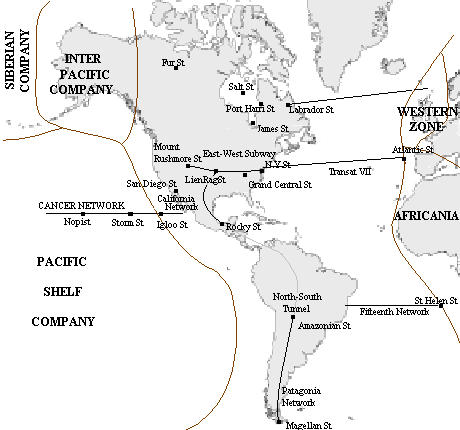

| plan du site |
La Compagnie Panaméricaine en 2360
|  | |
|
Notes sur la carte La carte est cliquable Elle est une interprétation personnelle de ma lecture des Compagnie des Glaces. |
Il semble que cette compagnie ait été créée à partir de Kansas City, probablement pas dès la Grande Panique comme le veut l'histoire officielle, mais certainement beaucoup plus tard.
Vers 3940 EC (Les Illuminés CR-2), cette compagnie ne fait qu'un millier de kilomètres. Rapidement, elle adhère dans la Confédération dont elle devint le membre le plus important.
Vers 2218 EG, cette confédération contrôle la majorité du continent américain et de l'Antarctique, et, par un coup de force probablement provoqué par les Aiguilleurs, la Panaméricaine annexe les autres compagnies de la Confédération. Les compagnies qui refusent cette situation (comme le Cancer Network) sont isolées et rapidement vaincues.
Elle occupe ensuite la banquise atlantique, mais perd vers 2340 EG les Iles Britanniques, occupées par les Roux qui en font la Zone Occidentale.
En 2343 EG, elle est la compagnie la plus puissance et se lance dans deux grands projets ferroviaires, le Métro Est-Ouest et le Tunnel Nord Sud.
Pour s'emparer des réserves énergétiques de la Compagnie de la Banquise, elle l'attaque mais subit une lourde défaite et est repoussée.
Depuis 2360, elle subit quelques raids de la part de la Compagnie des Dirigeables.
Au Réchauffement, elle est envahie par les eaux de fontes, d'abord du Mississippi, puis de 'Amazone. A terme (2375 EG), elle se retrouve divisée en quatre parties :
La compagnie est dirigée par un conseil d'administration composé de six membres (en 2360) : Lady Diana, la présidente de la Compagnie, le Vétéran, Mirasola, Borska, Peter Housk et Jeb Interson.
Afin de détenir un poste supplémentaire à la CANYST, elle a créé une compagnie filiale : la Compagnie Inter-Pacifique.
Quelques réseaux sont connus :
D'autres stations :
Il y a aussi la province de la Baie d'Hudson avec les stations : Salt Station, Port Harri Station James Station, Labrador Station, Mary Station et Cross Pana Station
Deux nouveaux réseaux sub-glaciaires ont été récemment creusés :